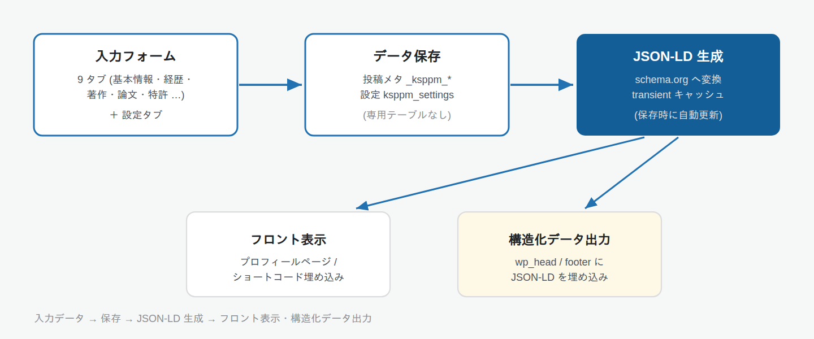

トラブルシューティング
よくある問題とその解決方法をまとめています。
よくある問題と解決策
プロフィールページが 404 になる
原因: 有効化やプレフィックス変更後にリライトルールが再生成されていない。
1
WordPress 管理画面の「設定 → パーマリンク」を開き、そのまま「変更を保存」をクリックします。リライトルールが再生成され、プロフィール URL が有効になります。
ルート URL 公開を使わない場合でも、各プロフィールは必ず /profile/{スラッグ}/ など、いずれかのプレフィックス配下で公開されます。
構造化データ (JSON-LD) が出力されない
原因: JSON-LD 出力が無効になっている、またはキャッシュが残っている。
1
「設定」タブで「JSON-LD を出力する」が ON になっているか確認します。
2
プロフィールを再保存すると、その投稿の JSON-LD キャッシュが破棄され、最新の内容で再生成されます。
head 出力がテーマやキャッシュ系プラグインと衝突する
原因: テーマやキャッシュ系プラグインが wp_head の出力に干渉している。
1
「設定」タブの「出力位置」を footer に変更すると、</body> 直前に JSON-LD が出力されます。
使用中のプレフィックスが削除できない
原因: そのプレフィックスを使用しているプロフィールが存在する。
1
各プロフィールの編集画面で、別のプレフィックスに変更してから、設定画面でプレフィックスを削除してください。
書影や画像が表示されない
原因: 指定した画像がメディアライブラリに存在しない、または現在のユーザーに編集権限がない添付を指定している。
1
各画像項目の「画像を選択」から、メディアライブラリにある画像を選び直して保存してください。
動作要件
| 項目 | 要件 |
|---|---|
| WordPress | 6.0 以上 |
| PHP | 8.0 以上 |
| PHP 拡張 | DOMDocument (ext-dom) |
技術仕様
- データ保存: プロフィール情報は投稿メタ (
_ksppm_*)、プラグイン設定はwp_options(ksppm_settings) に保存されます。専用テーブルは作成しません。 - キャッシュ: JSON-LD は transient で 1 時間キャッシュされ、保存時に自動で無効化されます。
- 外部通信・メール送信・定期実行 (Cron) はありません (すべてサイト内で完結します)。
- セキュリティ: nonce・権限 (capability) チェック・入出力のサニタイズ / エスケープ、画像参照や一覧表示の権限検証を実装しています。
- アンインストール時: プロフィール投稿・メタ・設定・キャッシュ・専用権限をすべて削除します。
